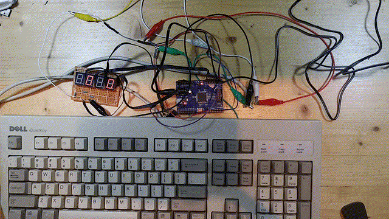
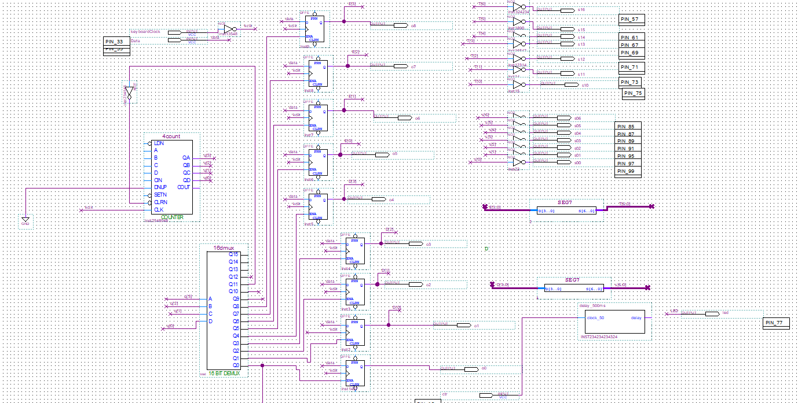
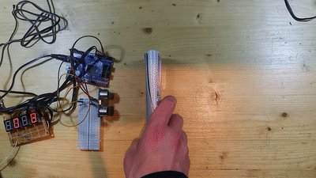
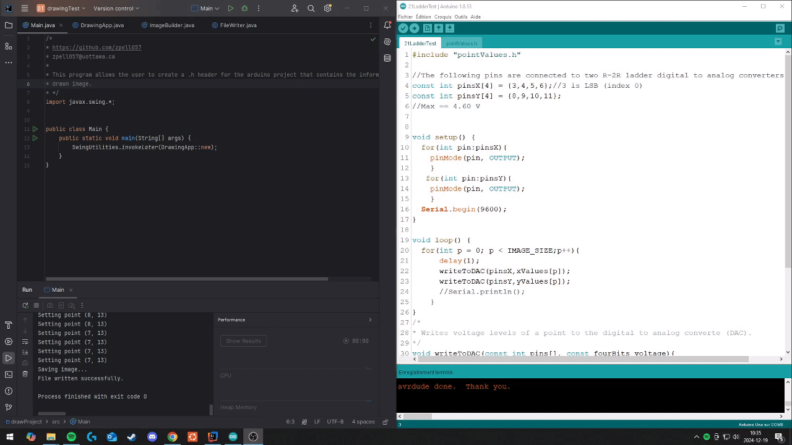
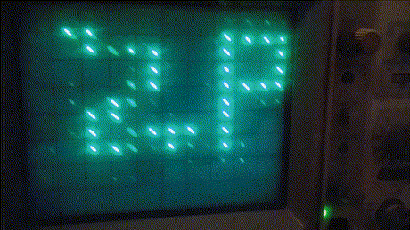
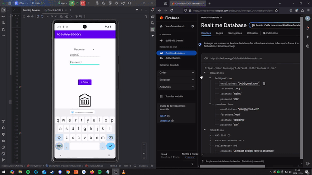
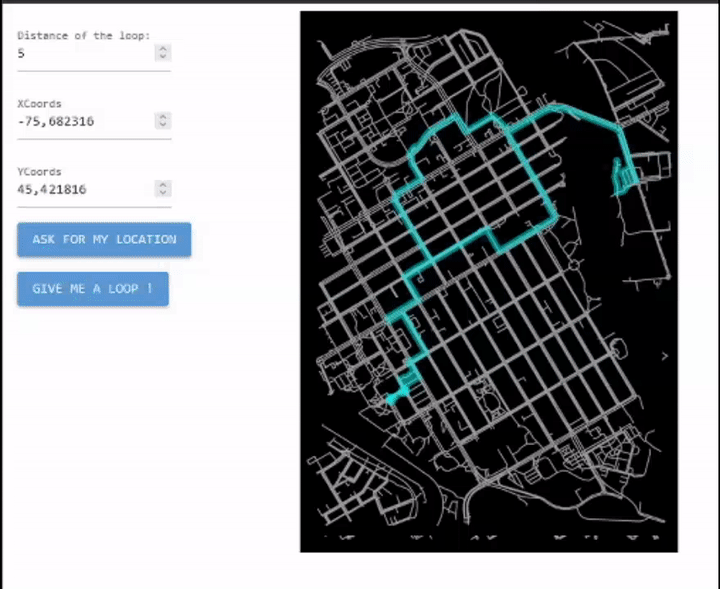
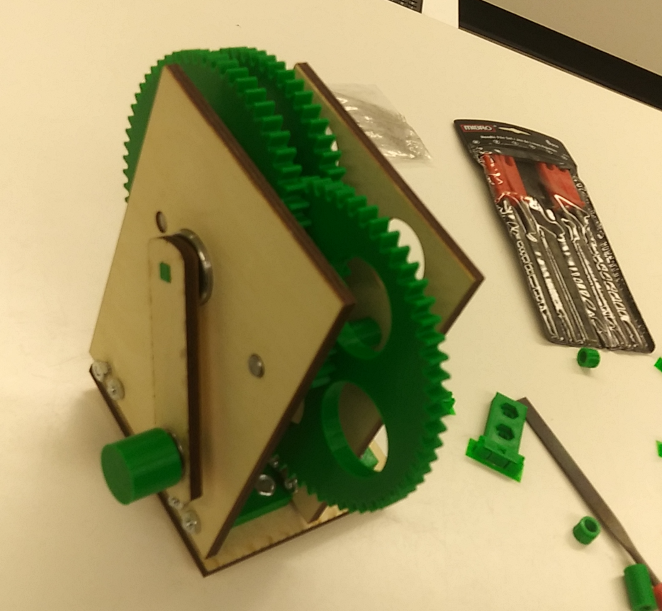
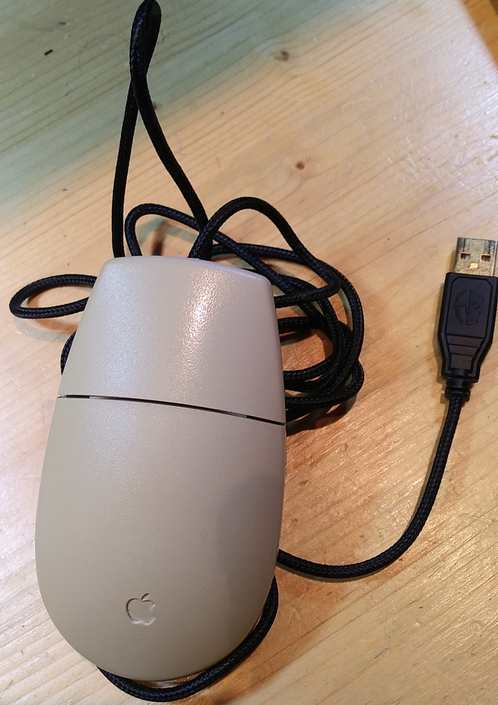
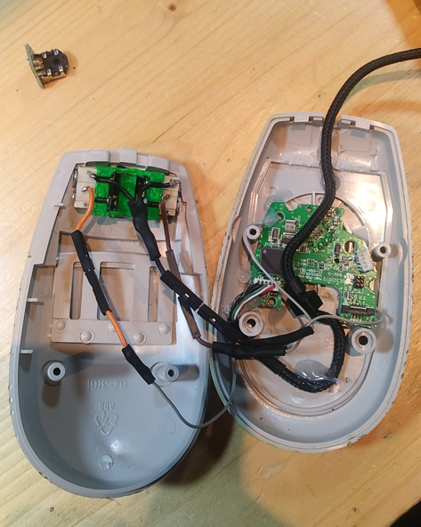

Circuit design
PS/2 keyboard decoder
To experiment with CPLDs and logic design, I designed a hexadecimal decoder for PS/2 keyboards. I did so with simple components that could be bought on a chip and assembled onto a breadboard, like registers, demultiplexers and a hexadecimal counter. This was made in a Quartus prime as a block diagram circuit and uploaded onto an Altera MAX II CPLD development board. The output of the circuit (the hex code of the key) was displayed on a seven-segment display module that I made myself from repurposed components.


Ultrasonic distance sensor interface in Verilog HDL
To learn how to design logic circuits using Verilog HDL, I built a module to interface with an ultrasonic distance sensor (HC-SR04) and output the estimated distance between the module and the next object in front of it in hexadecimal.
I then made another module to convert that distance to decimal (BCD) using the double dabble algorithm.
Finally, I added modules to display the distance on seven segment displays and uploaded the design on an Altera Max II CPLD to test the accuracy of the system.

Arduino
Oscilloscope drawings
As part of this short project, I made a software and hardware solution to make drawings on an oscilloscope in x/y mode.
The hardware implemented was two 4-bit digital-to-analog converters (DAC) implemented with a R-2R resistive circuit allowing to have 16 voltage values as output. The 4 inputs of these DACs are connected to an Arduino uno which iterates over the x/y coordinates to light up represented by nibbles.
The Arduino code iterates over the coordinates that are contained in a header named pointValues.h containing the drawing’s data.
To make the header for a drawing, I made a program in Java that lets the user make a drawing with his mouse which will be automatically converted into a pointValues.h file that can be compiled an uploaded to the Arduino board to display the drawing on the oscilloscope.
This is the program I used to make my current profile picture.


Game & Watch-type game
Arduino projects are some of my favorites, because they let me combine my interests in software and hardware development.
The GIF to the right presents a game that I have made where the player sorts alphabetically a randomly generated array of numbers using a controller made from repurposed keyboard switches (from the keyboard I am playing with in the header).
In the next projects I have made an infinitely looping animation for VGA monitors and a device that plays a sound from an SD card when a switch is opened.


Audio message player using an SD card reader, a small speaker and a switch

Java + Android
SEG 2105 PC Building App
As part of the SEG 2105 course, we had to build an Android application capable of managing the inventory and ordering system of a fictional computer manufacturer. The project was carried out by a team of four of which I was the manager.
The Android application was written in Java and was linked to a Firebase real-time database, which was my first experience with databases.
As team manager, I was also responsible for integrating my colleagues’ branches into the main branch of the Git repository of the project by resolving conflicts, testing and correcting implementation defects.

Arithmetic practice Android app developped in Java using Android Studio
I have learned Java in one of my first year university courses. Being an android user and knowing that android apps run on the JVM, I wanted to apply the theoretical knowledge from this course for a project. I therefore decided to make an app inspired by Texas Instruments' Little Professor toy.
With the help of an online course, I easily translated that knowledge to real-life use.

Python
Loop creation software for Hack the Hill II hackathon
For the general category of the 2024 Hack the Hill II hackathon, I built a program in python that, when given a point location and a target distance, would generate a loop for the user to walk or run. The program aimed to help people be more active despite decision fatigue. The algorithm that I built for the program optimised the loop for safety and for enjoyability, by prioritising pedestrian paths and smaller streets where the speed limits are slower.
I built the integrity of this program on my own by using common shortest path graph algorithms and had a lot of fun presenting the project to other programmers.

Charts compilation
Series of python programs made to edit a video compilation of all #1 songs on the canadian charts in a given decade. The data of what songs were #1 during what time was scraped off of wikipedia using
pandasto then be searched and downloaded from Youtube using google cloud's Youtube Data API v3 and
pytube. The final video was then created by editing 10 second clips from each video and adding text showing info about the song with
moviepy.
3D
Various 3D modeling projects done in Fusion 360 and onshape.



Old Apple computer mouse converted to optical and USB to be used on modern computers using the internals of a modern mouse.

